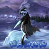

Forums galactiques > Taverne galactique : lieu de discussion informel > Honteux favoritisme !!!
Pages : 1
| Gaston Lagaffe Réputation à la taverne : 401  12/06 ETU 19:49 | Score : 0 Détails Compte-rendu d'espionnage.
Vous avez envoyé une flotte de 1 escadres mécanoïdes télépilotées en espionnage du commandant dieu. Vous avez choisi de vous intéresser aux informations de type géopolitique. Voici le rapport de la mission. Le commandant dieu possède 0 planètes. Vos mécanoïdes ont pu avec certitude déterminer que les planètes suivantes lui appartiennent : Profil d'origine de ce commandant : la Fédération. Vos pertes s'élèvent à 0 escadres télépilotées. Dieu est fédéré, c'est honteux pour une entité qui se doit impartiale. Quelle humiliation pour les alliantistes et les guildiens. | ||
| GéNéSiS Réputation à la taverne : 86  12/06 ETU 19:59 | Score : 0 Détails non de dieu !!!!!!
dieu un fédé !!!!!!! rhooooo !!!!!!! et les guildeen alors !!!!!!! ^^ a mais j'y suis !!!!! L'un des tiers de dieu est fédé , un autre est alliantiste et enfin le plus important un autre est guildeen ^^ | ||
| Général du renard Réputation à la taverne : 76  12/06 ETU 20:02 | Score : 0 Détails dieu ne pouvant pas avoir de choix neutre , il faut bien qu'il soit un des 3
donc voila ,de plus il n'a pas de planète alors qu'il soit attlantiste , fédéré ou guilde je ne voit pas le probleme et c'est dieux qui a creer cette univers , donc il a le droit de faire ce qu'il veut et avoir un minimum de respect (je dirais même maximum) | ||
| Ulrar Réputation à la taverne : 19  13/06 ETU 00:08 | Score : 0 Détails Il devrait être guildien, sa a du coûter cher de crée cet univers :)
| ||
| Mata Hari Réputation à la taverne : 577  13/06 ETU 00:10 | Score : 0 Détails Très bonne idée Gaston !
Je suis révoltée tout comme vous^^ |
Pages : 1
Forums galactiques > Taverne galactique : lieu de discussion informel > Honteux favoritisme !!!